A Do-It-Yourself Electrooculogram.
Electrooculography is a beautiful concept that we stumbled upon during our Junior year of study, which was, in fact, so intuitively simple that we decided to whip up a little model by ourselves. So here's a Do-It-Yourself Electrooculogram we came up with. As a bonus, we wrote a little extensible quasi-framework over which you could write quasi-plugins (Cursor movement and Toy Car Navigation being ours).
Premise.
Straight out of
Wikipedia:
To measure eye movement, pairs of electrodes are typically placed either above and below the eye or to the left and right of the eye. If the eye moves from center position toward one of the two electrodes, this electrode "sees" the positive side of the retina and the opposite electrode "sees" the negative side of the retina. Consequently, a potential difference occurs between the electrodes. Assuming that the resting potential is constant, the recorded potential is a measure of the eye's position.
In ELI5 (Explain Like I'm Five) terms, we're going to stick a bunch of electrodes across our eyes, and since they generate different potentials for different positions, we should be able to get an idea of the current position of the eyes based on the potential observed across them.
How it works.
Here's a DLI5 (Drawn Like I'm Five) of the setup:
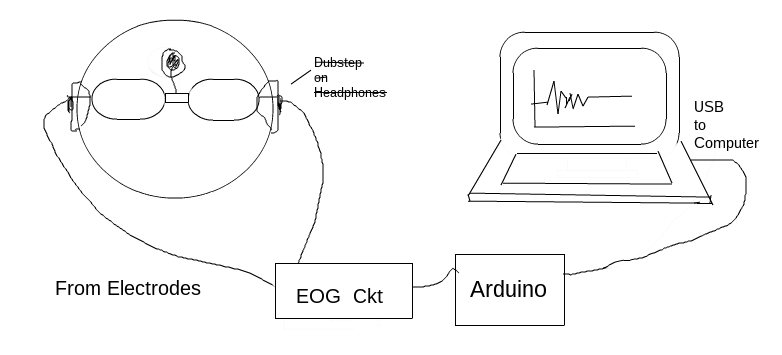
- Electrodes on a glass frame. When the eyes move, the corresponding change in potential across them is transmitted from electrodes placed across them, to a noise-reduction circuit. Biological signals are goddamn noisy.
- Amplifying and filtering circuit. The raw signals are, yeah, noisy. It's not possible to completely dust off the signal and ready it for data extraction, but something can be done.
- Arduino - The Microcontroller. Arduino here acts as an interface between the EOG circuit and the Computing device. We use it to take the cleaned up signal and send the values to a Computer over USB ports.
- Computer and some code. We continuously read the USB port for the arduino-transmitted potential values and classify them based on observed values for each position of the eyes.
Electrodes on a glass frame.
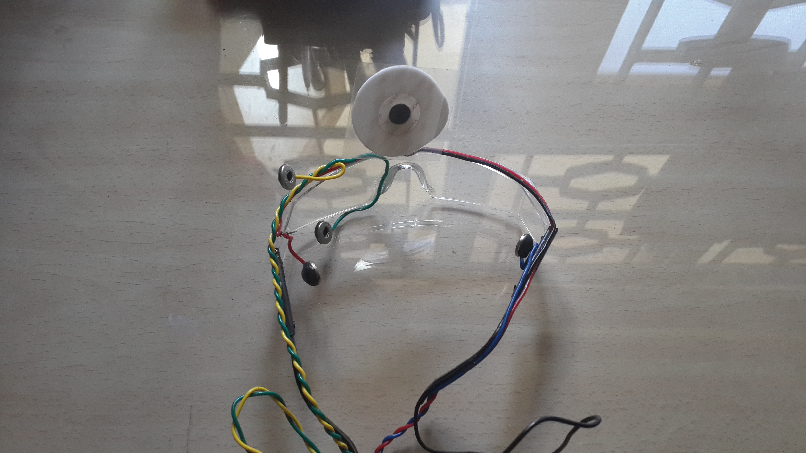
This step is pretty straight-forward. We use a pair of glasses as a frame to wind the electrodes such that when worn, the electrodes make contact with our
temples. There are two electrodes (Right/Left or Up/Down), along with a Ground Electrode placed on the forehead to isolate noise and for electrical reference.
Medical electrodes are a good choice.
Here are some snazzy images of how it looks like when worn.
Amplifying and filtering circuit.
The signals received from the electrodes are
noisy, so we need an amplification and filtering circuit to get rid of the noise. We're only interested in the frequency range of the usable signal that lies in the narrow bandwidth of around 1 Hz to 35 Hz.
Everything else be damned.
As for the Amplification, that's required because we're dealing with skin surface difference potentials in the range of microvolts. Our Arduino, meanwhile, has an input reading range of 0-5 V and it needs to comprehend what's going on.
Here's a condensed form of the circuit:
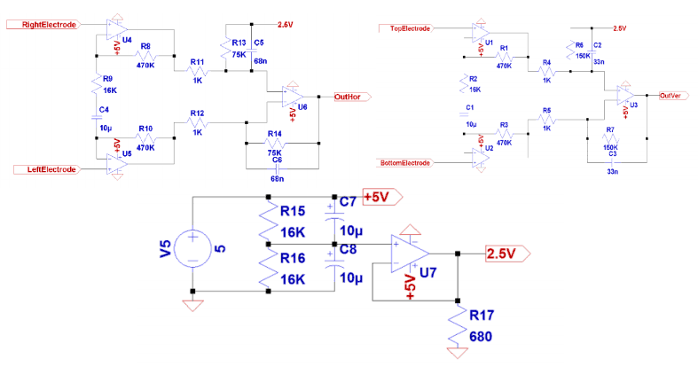
Here are the components used:
Instrumentation Amplifier, INA118.
Using the
INA118 Instrumentation Amplifier, we'll amp up the Gain all the way to 500. For this chip, we have the Gain formula
Gain = 1 + (50kΩ/Gain Resistance Rg).
That should give us the value of Rg as 100Ω.
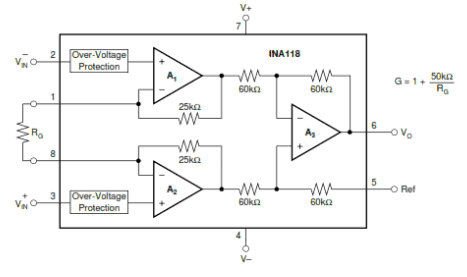
We use an
LM358 OP-AMP with a cut-off frequency of 50 Hz and a Gain of 1.
Fo = 50 Hz, -> C1 = C2 = 0.1μF, R1 = R2 = 27kΩ, C3 = 0.2μF and R3 = 62kΩ.
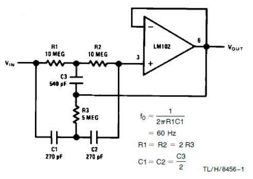
Two cascaded first order filters with a passive circuit, making a second order filter.
Fc = 16 Hz, C = 0.1μF -> R = 100kΩ.
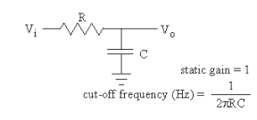
A simple differentiator circuit can be used to remove DC
drifts or act as a high-pass filter. In conjunction with the low-pass filter, this essentially acts as a band-pass filter.
dv/dt = 0 -> I = 0 ∴ V = 0 ∵ V = IR -> V = 0 * R -> V = 0.
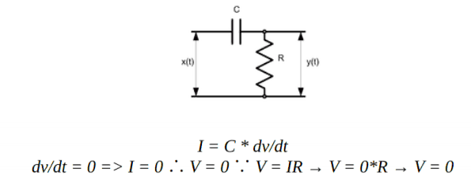
We use another LM358 OP-AMP as a non-inverting amplifier for secondary amplification. We'll amp up the gain to 20.
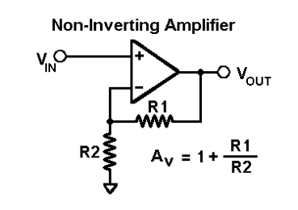
We'll inject DC offset using a potentiometer, in order to ensure that the input to the ADC of the Arduino doesn't stray outside of 0 V to 5 V.
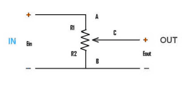
Run-of-the-mill OP-AMP
LM741 to get the output voltage to
follow the input voltage.
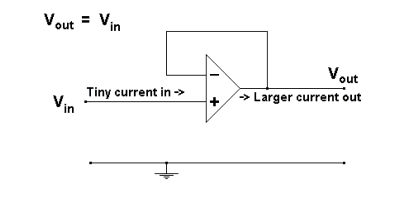
Here's a final version of all the pandemonium that's going on:
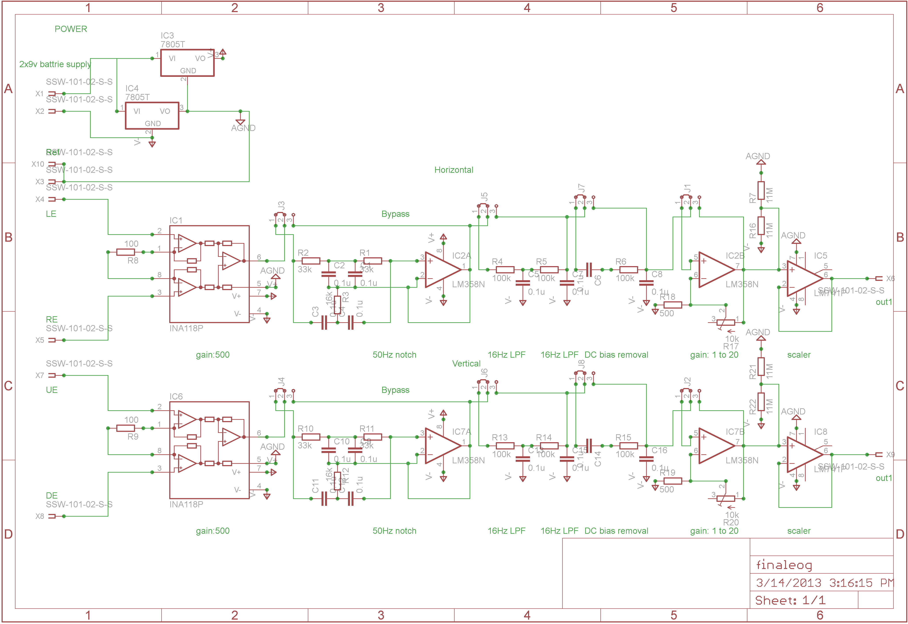
Note that RE/LE and UE/DE are the Right, Left, Up and Down Electrodes respectively. The whole circuit can be condensed down to a series of stages:
- Instrumentation Amplifier with a Gain of 101 (Rg = 500Ω).
-
Passive high-pass Filter.
C = 10μF and R=100kΩ, Cut-off frequency fc = 1/(2Π(100kΩ)(10μF)) ≈ 0.155 Hz.
- Secondary Amplification with adjustable gain (minimum gain is 51 (Rg = 1kΩ)); this stage also provides a DC Offset of 2.5V to center the output between the 0 to +5 V range required by the Arduino.
-
Passive low-pass Filter.
C = 10μF and R=560Ω, Cut-off frequency fc = 1/(2Π(560Ω)(10μF)) ≈ 28.42 Hz.
The combination of the HPF and the LPF effectively creates a band-pass filter with a pass range of 0.155 Hz to 28.42 Hz.
Voila!
That's pretty close to the 1-35 Hz pass range that we were aiming for!
The output from this circuit is given to the Arduino, which has an inbuilt 10-bit
ADC to convert the analog signals to crunchable digital values.
Arduino and some pseudo-Frontend code.
Our Arduino here initializes serial communication and provides the native serial interface between the apparatus and the Computer through an USB Port. It maps circuit behavior to serial outputs of a preset pattern which can then be parsed or 'depatterned' with a general-purpose programming language, say, like Python.

We use an
Arduino Uno which comes with an ATmega328 Chip. 3 connectors connect our PCB with the Arduino board - one of them is connected to the
GND pin, while the other two transmit the PCB output to analog pins
ANALOG IN A0 and
ANALOG IN A1. And of course, there's a USB connection to our Computer.
Here's the code running on our Arduino to continuously transmit values over the connection:
As you can see, we're using commas to delimit the values from the left and right electrodes so that we can parse the values back out on the backend with Python.
Computer and some pseudo-Backend code.
So now we're receiving data over a USB Serial Port from the Arduino. All that's left is to crunch the data and find out what those eyes are up to. Here's what we're gonna do:
- "Hey, look down, will ya? I need to know what kind of signals I get from your eyes when you look down."
Calibration. Ask the user to wear the eyepiece and calibrate the backend for each eye position.
- "Hey, the signals I'm getting from your eyes now seem very similar to the signals that I got earlier when you were looking down. So you must be looking down now!"
Classification. Use the stored dataset from Calibration as reference to do some live classification.
We chose to use
Python for the task.
The
Calibration part is a step-by-step process where the user is prompted to move her/his eyes to different positions to record the signals received at each position. This data is then stored as a reference for live classification. Here's the code (comments and explanation inline):
Show.
Great, now we have
the serialized dataset for reference! On to live classification.
The
Classification module consists of two implementations that classify live data with respect to the reference dataset we just serialized. One is a barebones approach where we calculate different distance metrics between the dataset and the live data, and take the mean of these metrics since they scale up in linear fashion. Another approach is to use
Support Vector Machines and
Linear Discriminant Analysis using the
scikit-learn library. Here's the code (comments and explanation inline):
Show.
Houston, we have activity!
We now have the
infrastructure to capture ocular activity! Alright, so now we've setup the whole workflow of the Electrooculogram, enabling us to track eye movements live. On.
There is no spoon - Moving cursors and toy cars.
Our classifier now spouts out RIGHT! when the eyes move right. That's a bit of a stretch, but yeah, the general idea is that our computer now knows where the eyes are positioned. With that kind of power, we can move the world, but we'll be nice and move cursors and toy cars instead.
Cursor movement: For moving the cursor, we use
PyMouse. We initially place the cursor at the center of the screen, and for each update on the eye position, we accelerate the cursor in that general direction. Blinking does a mouse-click.
We hired a test subject for validation:
On a more serious note, it doesn't work as seamlessly, but some movement in the appropriate direction is observed with some (read:
some bad) lag. Here's the code (comments inline):
Show.
Toy car navigation: This requires an additional microcontroller that provides input to a certain wheel of the toy car based on the position of the eye.
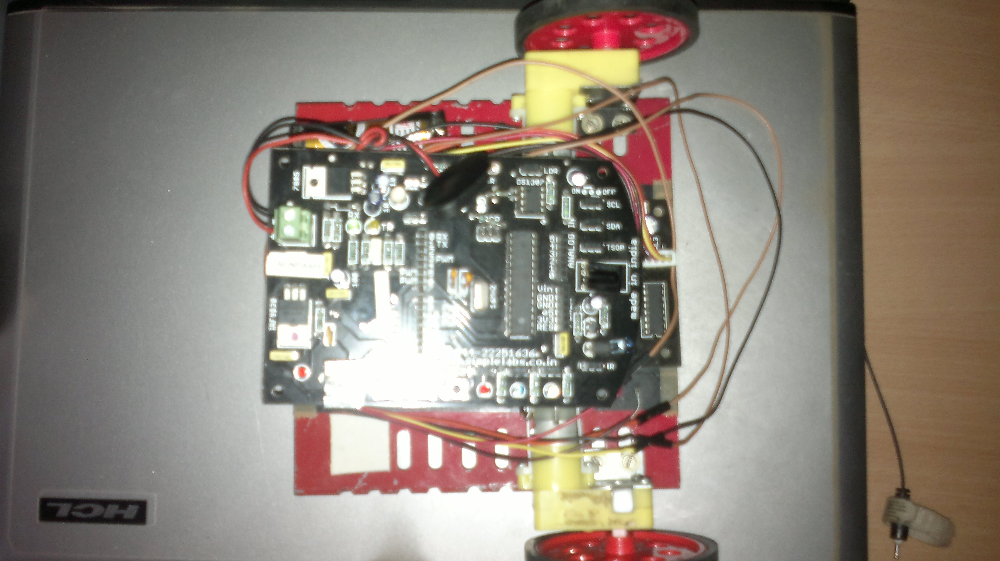
A different Arduino is connected to a different serial port, that has some fairly straight-forward code which receives data from the computer and writes output to the respective motors, all of which are connected to different output pins. Here's the code (comments inline):
Show.
And we have the following Arduino code running on our toy car, listening to values transmitted over the serial port by our Python code, and correspondingly rotating wheels:
We also messed around with live sockets (
gevent) to enable webpage scrolling with the eyes, but it's a mostly failed/defunct experiment that you can find
here.
Usability and improvements.
"Your product is bad, and you should feel bad." - Groucho Marx
"Bullshit." - Argus Filch
"Come on baby, light my tyre." - Toy car
After all that commotion, we now have a proof-of-proof-of-concept, but it's far from usable. But that's fine, we weren't really starting up here. A lot of improvements could be made, and here are some limited ideas:
- To avoid clutter, we could go Wireless.
- The serialization takes time, so we could use an in-memory store like Redis or memcached to speed up the process.
- We could look into ultra-small, higher-res and faster ADC alternatives to the Arduino, such that everything could be built into a small compartment attached to the glass frame itself. Google Glass, anyone?
- We could use Assembly instead of Python. Sadly, we weren't feeling suicidal, so that never happened.
Making this workflow faster than Image Processing alternatives would be quite the feat, though.
Feel free to
fork us on Github or mail us for queries!

{kind=link}
{kind=link}
{kind=link}
{kind=link}
{kind=link}
{kind=link}
{kind=link}
{kind=link}
{kind=link}
{kind=link}
{kind=link}
{kind=link}
{kind=link}
{kind=link}
{kind=link}
{kind=link}
{kind=link}
{kind=link}